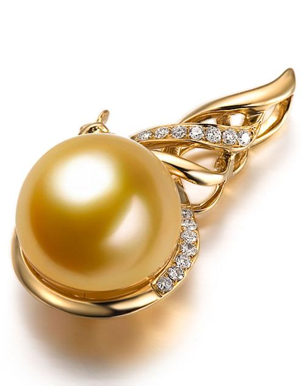
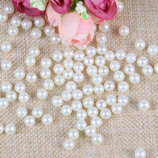

珍珠是在几种软体动物中，由于在套膜里面或下面层层真珠质围绕不附着于外壳的外来粒子聚合而形成的稠密凝结物，具有各种形状，但最典型的是圆形和梨形呈现各种颜色，但通常是白色或浅色，且有不同程度的光泽，可做装饰或入药。
珍珠的英文名称为Pearl，是由拉丁文Pernulo演化而来的。它的另一个名字是Margarite，则由古代波斯梵语衍生而来，意为“大海之子”。
早在远古时期，原始人类在海边觅食时，就发现了具有彩色晕光的洁白珍珠，并被它的晶莹瑰丽所吸引，从那时起珍珠就成了人们喜爱的饰物，并流传至今。
中国的天然淡水珍珠主要产于海南诸岛。珍珠有白色系、红色系、黄色系、深色系和杂色系五种，多数不透明。
珍珠的形状多种多样， 有圆形、梨形、蛋形、泪滴形、纽扣形和任意形，其中以圆形为佳。非均质体。颜色有白色、 粉红色、淡黄色、淡绿色、淡蓝色、褐色、淡紫色、黑色等，以白色为主。白色条痕。具典型的 珍珠光泽，光泽柔和且带有虹晕色彩。透明至半透明。折光率1.530－1.686，双折射率：集合体不可测。无色散现象。硬度2.5－4.5。天然淡水珍珠的密度一般为2.66－2.78g/cm3，因产地不同而有差异。无解理。韧性较好。在短波紫外光下白色珍珠为浅蓝色至浅黄色；黄色和金色珍珠为黄绿色，绿褐色至深棕色；黑珍珠为通常粉红色到橙红色；X射线下有淡黄白色的荧光。遇盐酸起泡。
珍珠是一种古老的有机宝石，主要产于珍珠贝类和珠母贝类软体动物体内。珍珠为贝类内分泌作用而生成的含碳酸钙的矿物珠粒，由大量微小的文石晶体集合而成的。种类丰富，形状各异，色彩斑斓。根据地质学和考古学的研究证明，在两亿年前，地球上就已经有了珍珠 [1] 。在国际宝石界还将珍珠列为六月生辰的幸运石，结婚十三周年和三十周年的纪念石。具有瑰丽色彩和高雅气质的珍珠，象征着健康、纯洁、富有和幸福，自古以来为人们所喜爱。珍珠还分为淡水珍珠和海水珍珠两种。